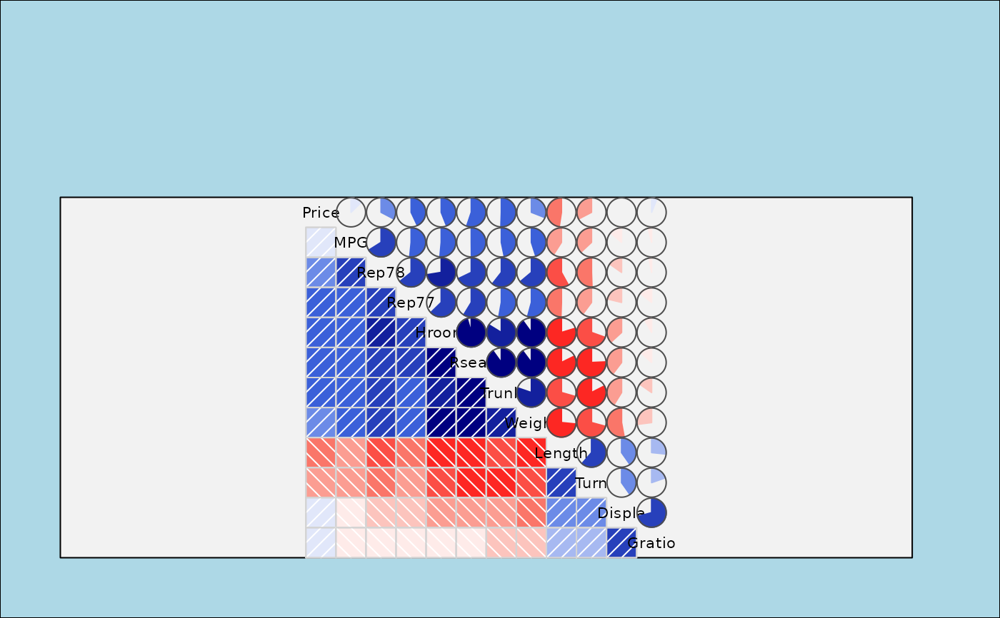
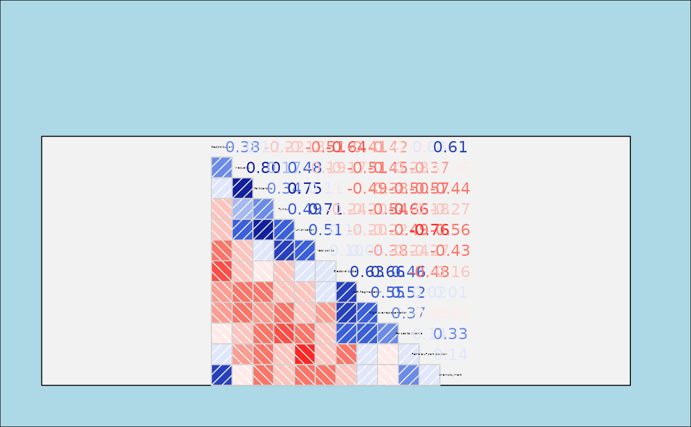

`corrgram2()` produces a correlogram using grid graphics. The off-diagonal cells can be shaded or filled with custom panel functions to show the correlation structure of a data matrix or correlation matrix.
Usage
corrgram2(
x,
type = NULL,
order = FALSE,
labels,
panel = grid_panel.shade,
...,
lower.panel = panel,
upper.panel = panel,
diag.panel = NULL,
text.panel = grid_text.panel,
label.pos = c(0.5, 0.5),
label.srt = 0,
cex.labels = "fit",
dir = "left",
legend = FALSE,
col.regions = colorRampPalette(c("red", "salmon", "white", "royalblue", "navy")),
cor.method = "pearson",
title = NULL,
abs = FALSE
)Arguments
- x
A data frame or matrix with one observation per row, or a correlation matrix.
- type
Use 'data' or 'cor'/'corr' to explicitly specify whether `x` is raw data or a correlation matrix. Usually this is inferred.
- order
Should variables be reordered? Use `FALSE` for no reordering, `TRUE` or `"PC"` for PCA-based angular ordering, or `"seriation"` for optimal seriation via the `cba` package.
- labels
Labels to use on the diagonal instead of column names.
- panel
Default panel function used for both `lower.panel` and `upper.panel`.
- ...
Additional arguments passed to the panel functions.
- lower.panel, upper.panel
Separate panel functions used below and above the diagonal.
- diag.panel
Optional panel function used on the diagonal before drawing diagonal labels.
- text.panel
Included for API compatibility with [corrgram()]. Diagonal labels are currently drawn with [grid_text.panel()].
- label.pos
Horizontal and vertical placement of the diagonal label.
- label.srt
Rotation for diagonal labels.
- cex.labels
Label size for diagonal labels. Use `"fit"` to size labels to the panel width.
- dir
Direction of the main diagonal. Use `"left"` or `"\"` for a descending diagonal, and `"right"` or `"/"` for an ascending diagonal.
- legend
If `TRUE`, draw a legend for the color scale.
- col.regions
A function returning a vector of colors.
- cor.method
Correlation method passed to panel functions. Default is `"pearson"`.
- title
Optional title drawn above the correlogram.
- abs
Logical; if `TRUE`, use absolute correlations for variable reordering.
Details
This function is a grid-graphics variant of [corrgram()]. It accepts either a data matrix/data frame with one observation per row or a correlation matrix. When raw data are supplied, correlations are computed with `use = "pairwise.complete.obs"`.
Variable reordering can be used to improve the display by placing related variables near each other. `order = TRUE` and `order = "PC"` use the PCA-based angular ordering described by Friendly (2002). `order = "seriation"` uses `cba::seriation(..., method = "Optimal")` and requires the `cba` package.
References
Friendly, Michael. 2002. Corrgrams: Exploratory Displays for Correlation Matrices. *The American Statistician*, 56, 316–324. http://datavis.ca/papers/corrgram.pdf
D. J. Murdoch and E. D. Chow. 1996. A Graphical Display of Large Correlation Matrices. The American Statistician, 50, 178-180.
Examples
# Draw a grid-based correlogram from data
vars6 <- setdiff(colnames(auto), c("Model", "Origin"))
corrgram2(auto[vars6], order = TRUE,
lower.panel = grid_panel.shade,
upper.panel = grid_panel.pie)

# 'vote' is a correlation matrix
corrgram2(vote, order = TRUE, upper.panel = grid_panel.conf)
